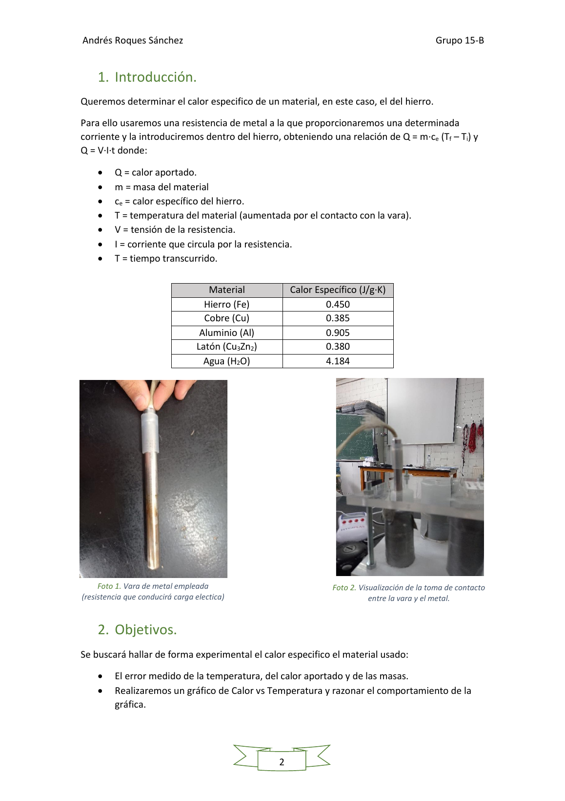
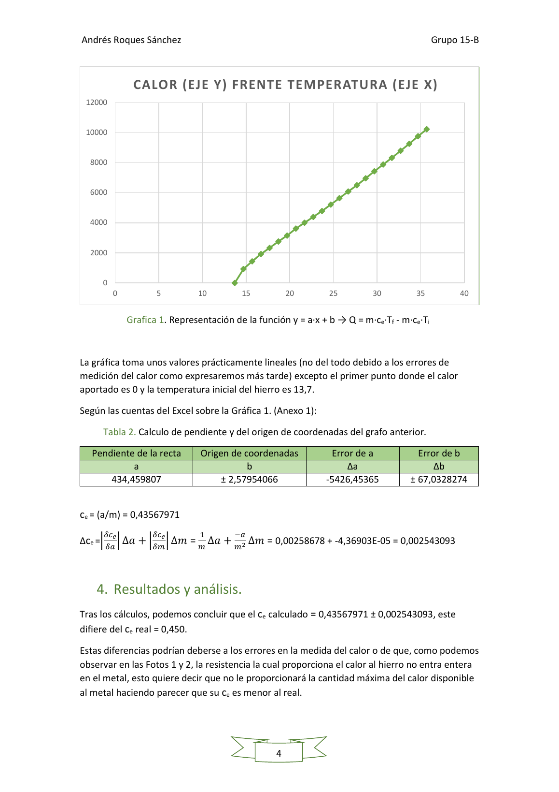

Física II · 2020–2021 · Laboratorio
Estimación experimental del calor específico del hierro.
Práctica de termodinámica donde se suministra energía eléctrica a una muestra de hierro, se registra la evolución de temperatura y se estima el calor específico mediante ajuste lineal y propagación de incertidumbres.
El ajuste experimental obtiene un calor específico aproximado de 0,4357 J/g·K, frente al valor de referencia de 0,450 J/g·K. La memoria analiza la desviación a partir de las incertidumbres de medida y las pérdidas del montaje.
Método
De potencia eléctrica a propiedad térmica.
Energía aportada
Q = V·I·t a partir de tensión, corriente y tiempo de calentamiento.
Temperatura
Registro de la temperatura de la muestra en sucesivos instantes.
Ajuste lineal
Representación Q–T y estimación de la pendiente asociada a m·cₑ.
Incertidumbre
Propagación de errores de tensión, corriente, tiempo y masa para interpretar el resultado.
Resultados
Montaje y regresión.


Entregable